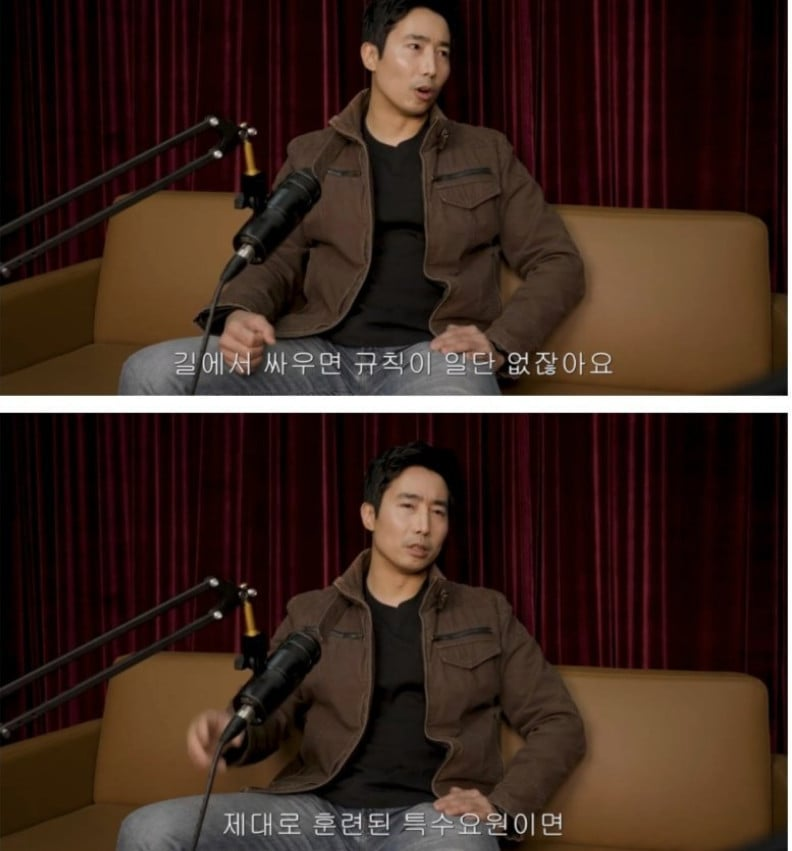
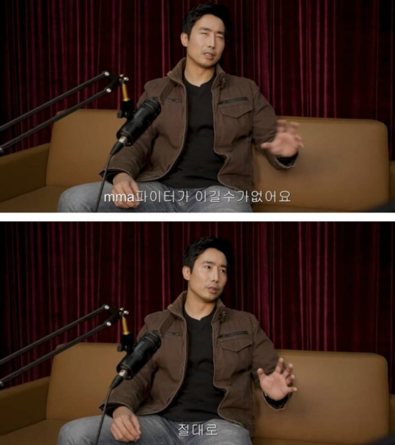
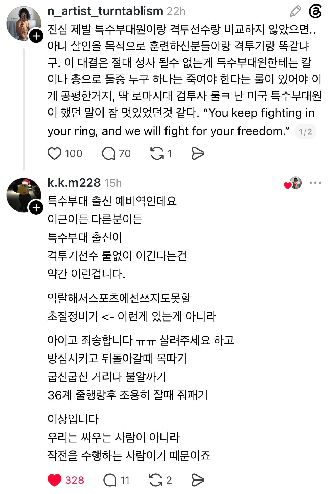

특수부대원들이 격투기 선수도 혀를 내두르는
초악랄한 살상용 무공을 가진건 아님ㅋㅋ



특수부대원들이 격투기 선수도 혀를 내두르는
초악랄한 살상용 무공을 가진건 아님ㅋㅋ
그런 룰이 없다고
gun법
그.. 나 다니던 체육관 udt 출신 아재 한체급 아리 선출이랑 스파링 뜨다 졌다 utd 출신들도 이름들으면 아는 유명한 사람임
길거리 싸움이구나 글 못읽은 모질이다 미안
mma 선수에게 mma룰로 싸우면 mma선수가 이기는건 당연한거야.
MMA 선수는 항상 심판이 옆에 있음? ㅋㅋ
브누아 생드니 라고 프랑스 특수부대 출신에 ufc 라이트 급 랭커 있는데 잘함 본문이랑 별 상관은 없긴한데 ㅇㅇ
누가먼저 부랄차냐 문제아님?
패디 핌블렛이 미해병 4명 그래플링으로 ㅈ바르는 영상 있지않나?
넌 글의 요지를 이해 못한거임
뭔 소리여 그냥 그렇다는 건데
야이씨발롬아 니가 이근의 의견을 간접적으로 반박한건데 여기서
뭔소리야 그냥 말한거임 잼나는 동영상 있어 ㅋㅋ
이지랄하면서 빠져나가는게 말이 된다 생각하냐
그냥 화기 들었을때 외에는 무조건 격투기 선수가 이김. 군인이 아무리 전투훈련을 하고 실전을 겪어도 그건 어디까지나 군인으로서의 작전수행능력이지 싸움 실력이 아님. 격투기 선수들은 1:1 대인전을 평생 해온 프로들인데 그 사람들을 특수부대원이 이긴다는건 격투기 선수 총 쥐어주면 전쟁나가서 특수임무 수행 가능하다는거랑 똑같은 개소리임.
아 ㅋㅋ 그래서 격투기 선수들이
원전, 방송국 테러
특수부대원보다 잘할수 있냐고 ㅋㅋㅋ
mma 선수가 룰이 없어지면 얼마나 위험해질지 모르는 사람들 많네 ㅋㅋㅋ
그냥 잘하는게 서로 다른건데 왜자꾸 싸움 붙이냐 ㅋㅋㅋㅋ
케이지에 가둬놓고 싸우라고 하면 MMA선수가 압도적으로 이기겠지만
그냥 섬같은데 던져놓고 상대방을 제압하라는 조건이면 특수부대원이 말그대로 사냥해버릴듯..
격투기선수는 섬에 던져 놓아도 글러브에 쫄쫄이트렁크입고 심판이 파이트! 외칠때까지 기다림?
격투기선수가 내지르는게 펀치가 아니라 칼날이라고 생각해보라는게 떠오르네
위에 애가 말한 그대로 섬에 던져놓는거라면 특수부대원이 이길거같음. 무기들고 정정당당하게 싸우면 ufc선수가 이길수도 있겠지. 근데 특수부대원들이 무기가 있어도 그렇게 정정당당하게 싸우지 않을거라 봄. 밤에 기습하고, 함정 설치하고, 위장해서 기습하고, 자기 흔적 지우는거, 적 흔적 읽는 기술같은 것들은 ufc선수래도 전문적으로 배운사람 따라갈수없다고 봄
그런의미가 아님..
그냥 극한상황에서 상대방을 죽이기위한 훈련을 받아봤냐 안받아봤냐를 이야기하는거임
군대에서 특수부대 수색대랑 모의훈련해본적있는데 나뭇가지랑 흙탕물 그리고 각종 오수로 냄새나는 하수도에서
입까지 다 잠긴채로 코로만 아주 작게 숨쉬면서 움직이는 모습 우연히 발견하고 ㄹㅇ 기절할뻔했음
저게 뭐지하고 한참쳐다봄, 근데도 알아채기도 힘들정도였음
24시간동안 언제 습격할지 모르는 특수부대원을 상대로
몇일동안 잠안잔상태로 UFC선수가 섬에서 버틸수있을까?
아무것도 없는 극한 환경에서 아무리 맨몸 전투력이 우수하다고 해도 그걸 견뎌낼수 있냐는거임..
근데 특수부대원은 그게 가능함 그냥 그 사람이 더 대단해서가 아니라 그런훈련을 받았기 때문에
그냥 이걸 말하고싶었던거임,
당연히 풀컨디션 맞다이로 붙으면 UFC선수가 걍 이기겠지;;
살아남은 나의 승리네~
근데 대부분 특수부대원들은 운동선수 준비하다 안되서 오는경우가 많긴해
길거리 싸움은 피하는게 맞고 사람을 때리거나 불구를만들면 당연히 안되고 자신이랑 주변인 보호할수있으면서 내적인 자신감과 심적안정을 유지할수만 있으면된다고 생각함.
목표를 위해 수단을 가리지 않는 것과
수단을 정하고 목표를 위해 싸우는 것의 차이
ufc선수는 길거리 싸움 안함? ㅋㅋ... 마인드셋만 서로 무슨수를 써서라도 죽인다. 통일하면 당연히 ufc가 더 잘하지 위험한 반칙기술도 더 잘아는데... 특수부대는 무기와 전략전술로 싸우는 거지 맨손격투에서는 당연히 밀린다. 전공이 아니니까
전제를 애초에 무기들면 무기들고 상대살상하는게 전공인 특수부대가 더 잘하는거고 마인드셋 이지랄 조까고 폭탄목걸이 있어서 상대 죽이고 열어야지만 산다. 무기없이 맨손 대결 ㄱㄱ 하면 mma가 개바르지 이걸 왜 한쪽만 룰 지키고 한쪽은 룰 안지키는데? 그럴거면 무기도 mma는 방검복이랑 헬멧 씌우고 싸우든지
길에서 싸운다는데 뭔 품속의 씹티컬 좆이프니 뭐니 ㅋㅋㅋ
아니 뭔 한국 특수부대원들은 일상생활 하는데 품속에 칼넣고 다니는 정병들이냐?
똑같은 논리로 MMA 선수가 갱단 소속이라 일상생활할때 바지춤에 우지 숨겨놓고 다니다가 꺼내서 난사하면 어쩔건데
이런식으로 가면 길거리 싸움 최강자는 품속에 손도끼 넣고 다니는 조선족임 ㅇㅇ
그러네 길거리싸움은 규칙이 없으니 특수부대원이 무기 물색하려 고개 돌리는 순간 항상 가지고 다니던 손도끼 키라쨩을 어깨에 박아넣으면 게임 끝이네
미안한데 항상 코트 안쪽 깊이 숨겨놓은 99구경리볼버 Dr.나이트메어의 총구가 당신의 목숨을 앗아감
당장 짱돌 줍기 가능임
그런게 다 실전 기술에 포함되는거야 ㅎㅎㅎ
일단 은엄폐하고 바로 튄다음 무장해와서죽여버릴거같은데
총, 칼 쓰고 싸운단 얘기겠지
맨주먹인지 무기가 허용인지 알려줘야지